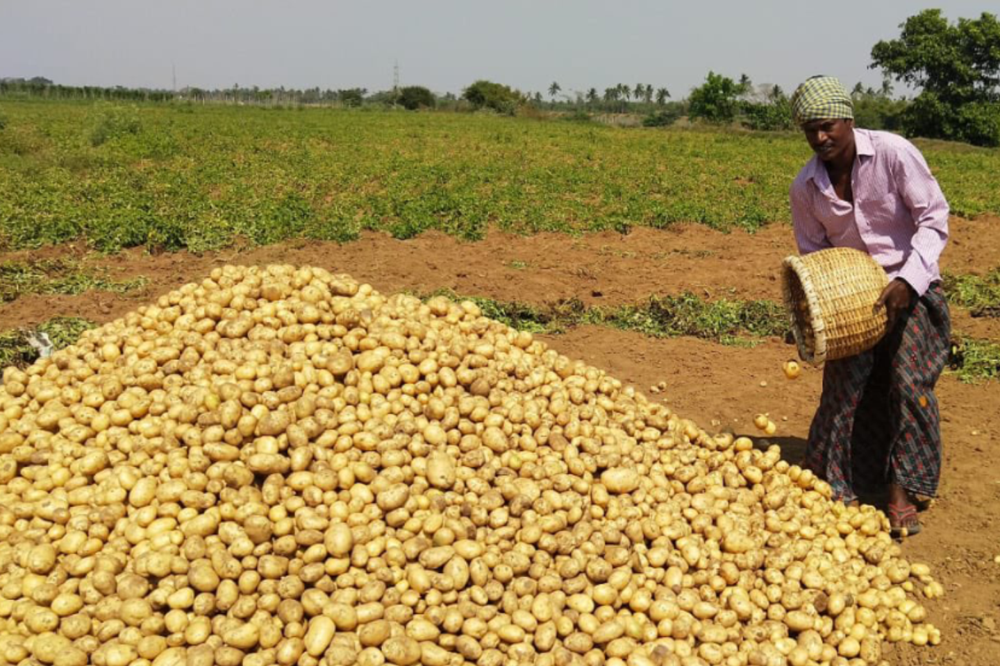
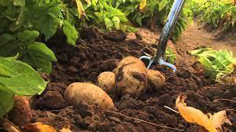
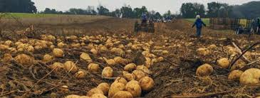

Our Suppliers
Christensen Potato Farm

Location: 1347 Aikele Ln, Moore, Idaho, United States
Potato Types: Yukon Gold, White, and Brown, Russian purple, Norweigen Orange
Cost:~$150/month for weekly shipment of 24lbs.
Contact @ Christensen.PotatoFarm@Gmail.com
Smith Potato Farms
Location: 1964 Cow Team Rd, Crystal, Maine, United States
Potato Types: Yukon White and Brown, Russet
Cost:~$195/month for weekly shipment of 26lbs.
Contact @ Smith.Binhin@SmithPotatoFarm.com
Billy Joe Bob Russet & Yukon Supplier
Location: 8610 Mo i Rana, Norway
Potato Types: Yellow, Purple, Southern Pink Potatoes
Cost:~$125/month for weekly shipment of 19.5lbs.
Contact @Billy.Joe.Bob.PotatoFarm@Hotmail.com
Spud Family Farms
Location: 1354 Volyn Oblast, Ukraine
Potato Types: Yukon Gold, White, and Brown, Russian purple
Cost:~$165/month for monthly shipment of 78lbs.
Contact @ CSpud.PotatoFarm@Gmail.com
Hart Jefferson Farm
Location: Phillipson, MA 01331
Potato Types: Yukon Gold and Brown, Norweigen Orange
Cost:~$155/month for weekly shipment of 25lbs.
Contact @Hart.Jefferson@Gmail.com